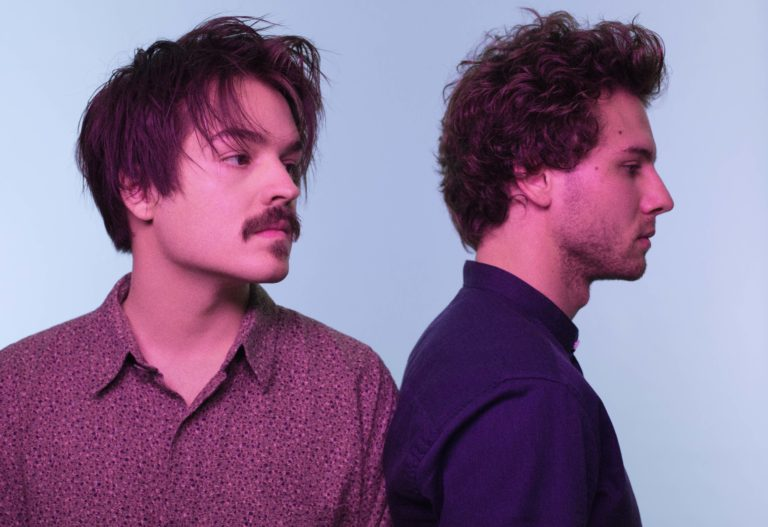

Milky Chance is a German folk group originating from Kassel. It consists of lead vocalist and guitarist Clemens Rehbein, bassist and percussionist Philipp Dausch, and guitarist Antonio Greger.
After meeting in school, Clemens Rehbein and Philipp Dausch finished their secondary education in 2012. Both were in a jazz quintet known as Flown Tones where Rehbein played bass guitar and Dausch was a guitarist. The group disbanded after the drummer left, though Dausch and Rehbein continued to collaborate feeling they had a good connection. They combined electronic production with acoustic guitar and their own vocals and lyrics. Rehbein wrote most of the songs at home, then uploaded the songs to YouTube, where they gradually gained a following.
After only playing two live shows over two weeks in 2013, the band recorded their debut album in a simple home-made studio in Rehbein's childhood home. Before finishing and releasing the record, the group released several singles on SoundCloud and on YouTube. In an interview, the band said that it took them three years to write the song "Stolen Dance". It was first uploaded to YouTube in April of 2013, and they had low expectations for the track. However, it quickly became a viral hit, racking up millions of views and peaking at No. 1 on charts in multiple countries. The video holds over 490 million views on YouTube as of April 2019.
They performed at the Reeperbahn Festival in Hamburg, Germany, and a representative from Ignition liked what he saw. Their manager set up a meeting and they reached a distribution deal. Their debut album "Sadnecessary" was released in October 2013 in Germany and peaked at number 14. A year later, it was released in the United States, receving largely positive press from North American critics. The band made their TV debut on Jimmy Kimmel Live! in October 2014, and also won the European Border Breakers Award that month. They started a tour of North America in late 2014, performing at venues and festivals such as Coachella Valley Music and Arts Festival. Their first show in the United States was in October 2014, in a sold-out performance at the Bowery Ballroom in New York City.
The band released their second album "Blossom" on March 2017. Blossom was inspired by the experience Clemens and Philipp had in the last two years and the two different worlds they've jumped into: touring and being home in their private life with family and friends.
The band embarked on another worldwide tour that continued throughout 2018. They visited more than 26 countries and performed more than 161 shows by February 2018.
Incorporating elements of folk, reggae, and jazz, the music publication Noisey wrote, "The pair masterfully combines house and electronic beats with reggae and R&B influences; the lyrics, though, could have been written by a folk singer."
During the following years, Milky Chance incorporated Antonio Greger as a guitarist and Sebastian Schmidt as their new touring member on stage.
Members
- Clemens Rehbein - lead vocals, guitar, bass (2012 - present)>
- Philipp Dausch - drums, percussion, vocals, guitar, bass (2012 - present)
- Antonio Greger - guitar, harmonica, bass (2015 - present)
Touring Members
- Sebastian Schmidt
Discography
- Sadnecessary (2013)
- EP Stolen Dance (2013)
- Blossom (2017)